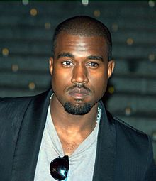

At only 26 year old, Kanye released his first album, The College Dropout. This album Jumpstarted Kanye's Career from just being a kid from Chigago, to the life of a superstar.
In 2007, Kanye payed for his mother's plastic surgery and liposuction as a gift for her. Unfortunately, there were complications with the surgery and she ended up passing away on November 10th 2007. This had a major affect on Kanye's psyche as well as his music.
After the Death of his Mother, Kanye felt responsible because he payed for the surgery. This caused him to change his overall public image as well as his style of music. His music had more "artistic" tone instead of pure rap and there was a lot of symbolism
Kanye has done some strange and controversal things in recent years, such as delaying his most recent album, Yandhi, 2 months so that
could record in Africa.| Album Name | Sales in $ |
|---|---|
| The College Dropout | 3358000 |
| Late Registration | 3100000 |
| Graduation | 2700000 |
| 808's & Heartbreak | 1700000 |
| My Beautiful Dark Twisted Fantasy | 1300000 |
| Yeezus | 750000 |
| The Life of Pablo | N/A |
| Ye | 85000 |
| Yandhi | TBD |
| Yandhi has not been released yet so there are no sales to report |